Individual Resolution in VisiumHD Data
individual-visiumHD-resolution.Rmd1. Introduction
VisiumHD datasets offer an unprecedented level of spatial resolution, capturing detailed transcriptomic information across tissue sections. However, the high resolution comes with substantial data sizes, which can pose challenges in terms of computational resources, data visualization, and interpretation. In some scenarios, reducing the resolution of the data by aggregating nearby barcodes (spatial spots) into fewer, larger groups is beneficial. This process not only makes the data more manageable but can also help highlight broader spatial patterns and reduce noise.
In this tutorial, we will walk through how to reduce the resolution
of a VisiumHD dataset to a user defined resolution that deviates from
the standard output provided by 10X Genomics (16um, 8um and 2um). We’ll
use the reduceResolutionVisiumHD() function from the SPATA2
package.
library(SPATA2)
library(SPATAData)
library(tidyverse)
library(patchwork)
# Load the SPATA2 example object
object <- downloadSpataObject("HumanPancreasHD", update = FALSE)
# show object
object## An object of class SPATA2
## Sample: HumanPancreasHD
## Size: 106574 x 18085 (spots x molecules)
## Memory: 663.77 Mb
## Platform: VisiumHD (Resolution: 16um)
## Molecular assays (1):
## 1. Assay
## Molecular modality: gene
## Distinct molecules: 18085
## Matrices (1):
## -counts (active)
## Registered images (2):
## - hires (6000x5968 px, not loaded)
## - lowres (600x597 px, active, loaded)
## Meta variables (2): sample, tissue_section2. The concept
The example object has a resolution of 16um. We can create grid layers that represent different resolutions. Note that the slight tilt of these grids derives from a slight tilt of the visium spots when visualized in pixel units.
# resolution = 32um
plotSurface(object, unit = "mm") +
ggpLayerGridVisiumHD(object, res = "32um", line_size = 0.1) +
labs(subtitle = "Resolution: 32um")
# resolution = 64um
plotSurface(object, unit = "mm") +
ggpLayerGridVisiumHD(object, res = "64um", line_size = 0.1) +
labs(subtitle = "Resolution: 64um")
# resolution = 128um
plotSurface(object, unit = "mm") +
ggpLayerGridVisiumHD(object, res = "128um", line_size = 0.1) +
labs(subtitle = "Resolution: 128um")
# resolution = 256um
plotSurface(object, unit = "mm") +
ggpLayerGridVisiumHD(object, res = "256um", line_size = 0.1) +
labs(subtitle = "Resolution: 256um")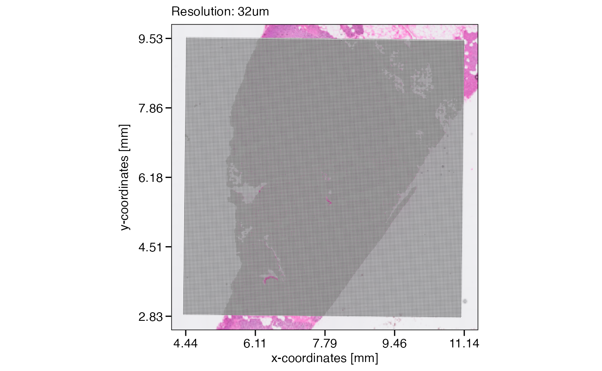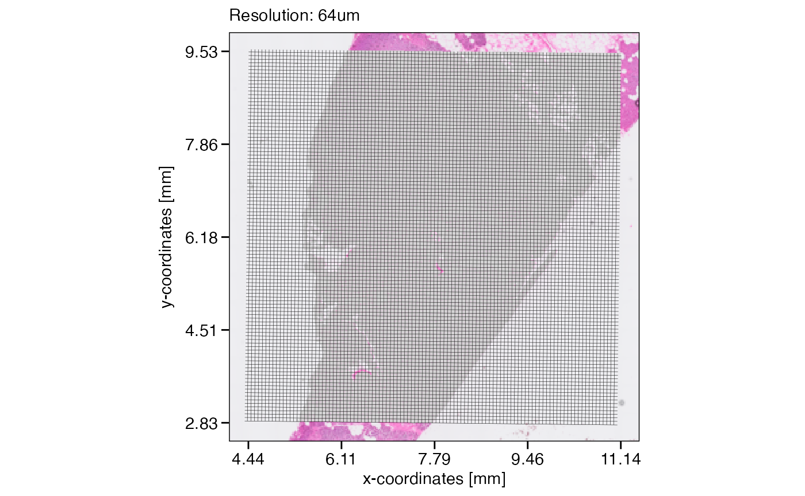
Assuming that the data size surpasses the limits of a computational approach we’d like to conduct, lets reduce the resolution of this object from 16um to 32um. The figure below visualizes the concept and what the new resolution would look like.
# create some additional ggplot layers
# for a closer look
grid_layer_zoomed <- ggpLayerGridVisiumHD(object, res = "32um", line_size = 0.25)
# for length reference (& proof of principle)
scale_bar_layer <-
ggpLayerScaleBarSI(object, sb_dist = "32um", sb_pos = c("5.75mm", "6.15mm"), text_nudge_y = -7)
# define axes of the example zone to focus on
xrange <- c("5.5mm", "6mm")
yrange <- c("6mm", "6.5mm")
# left plot
plotSurface(object, unit = "mm", pt_clr = "red") +
ggpLayerGridVisiumHD(object, res = "32um", line_size = 0.1) +
ggpLayerRect(object, xrange = xrange, yrange = yrange) # we zoom in here
# right plot
plotSurface(object, xrange = xrange, yrange = yrange, unit = "mm", pt_size = 0.1, pt_clr = "red") +
grid_layer_zoomed +
scale_bar_layerSPATA2 VisiumHD object with a resolution of 16um. On the right, zoomed in, a grid is visualized that indicates how the new resolution of 32um would look like.
3. Application
For the sake of this example we reduce the number of genes in this object to 100 as it speeds up the processing time dramatically. This is not required, however. The function works with as many genes your object contains - just slower.
# identify top 100 genes for the sake of this example
object <- identifyVariableMolecules(object, method = "vst", n_mol = 100)
genes_keep <- getVariableMolecules(object, method = "vst")
str(genes_keep)## chr [1:100] "INS" "REG3A" "TTR" "GCG" "GHRL" "SST" "VIP" "PPY" "CARTPT" ...You can further improve processing time by increasing the number of
workers. E.g. workers = 4 would occupy four cores for
parallel processing. Set the parameter to your liking.
# reduce resolution
object_32um <-
reduceResolutionVisiumHD(
object = object,
res_new = "32um",
genes = genes_keep,
workers = 1 # >1 uses the furrr package
)
# show object
object_32um## An object of class SPATA2
## Sample: HumanPancreasHD_redResHD
## Size: 27300 x 100 (spots x molecules)
## Memory: 103.94 Mb
## Platform: VisiumHD (Resolution: 32um)
## Molecular assays (1):
## 1. Assay
## Molecular modality: gene
## Distinct molecules: 100
## Matrices (1):
## -counts (active)
## Registered images (2):
## - hires (6000x5968 px, not loaded)
## - lowres (600x597 px, active, loaded)
## Meta variables (5): sample, square_exp, square_count, square_perc, tissue_sectionNote how the number of observations as well as the resolution indicated behind the platform name has changed. Furthermore, note the additional meta variables in the object square_count and square_perc giving information about the aggregation process. See below under 4. Meta data of the reduction process.
# left plot for orientation
plotSurface(object_32um, unit = "mm", pt_clr = "red") +
ggpLayerRect(object_32um, xrange = xrange, yrange = yrange)
# right plot
plotSurface(object_32um, xrange = xrange, yrange = yrange, unit = "mm", pt_size = 0.2, pt_clr = "red") +
grid_layer_zoomed +
#ggpLayerGridVisiumHD(object_32um, "32um", line_clr = "green") +
scale_bar_layer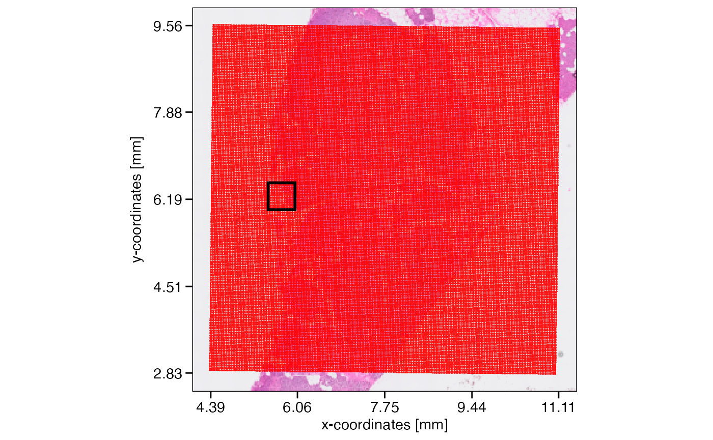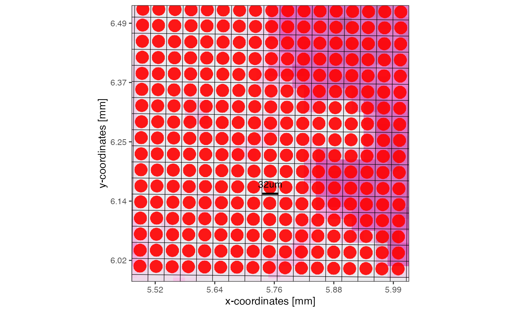
Moreover, you can initiate the SPATA2 object directly with
the resolution you require. The input for argument
square_res can deviate from the standard output as long as
it is an even number - devisable by either of the standard resolution
options, that is 16um, 4um or 2um. In that case, data from the next
possible lower resolution is read in and
reduceResolutionVisiumHD() is applied. E.g. if square_res =
‘4um’, data is taken from ~/binned_outputs/square_002um and then
aggregated accordingly. If square_res = 10um, the same is the case. If
square_res = 24um, data is read in from ~/binned_outputs/square_008um,
if square_res = 32um, data is read in from
~/binned_outputs/square_016um. Note, that aggregating counts by
resolution can take a considerable amount of time. Consider prefiltering
the raw counts using right from the beginning using genes
and/or increasing the number of cores to use with argument
workers.
For instance, initiating the object as indicated below looks for either the 8um folder or, if not available, the 2um folder. The object is initiated and the resolution is immediately reduced before being returned by the initiation function. If you have not already download the data, acces the dataset here.
object_24um <-
initiateSpataObjectVisiumHD(
sample_name = "PancreasHD_24um",
directory_visium = dir,"my/path/to/VisiumHD_Pancreas",
square_res = "24um",
workers = 1,
genes = genes_keep # for this example
)
object_24um## An object of class SPATA2
## Sample: PancreasHD_24um
## Size: 48076 x 100 (spots x molecules)
## Memory: 167.35 Mb
## Platform: VisiumHD (Resolution: 24um)
## Molecular assays (1):
## 1. Assay
## Molecular modality: gene
## Distinct molecules: 100
## Matrices (1):
## -counts (active)
## Registered images (1):
## - lowres (600x597 px, active, loaded)
## Meta variables (5): sample, square_exp, square_count, square_perc, tissue_sectionThe plots below highlight the new resolution. See 6. Proof of principle for the validation of this algorithm.
# left plot
plotSurface(object_24um, unit = "mm", pt_clr = "red") +
ggpLayerGridVisiumHD(object_24um, res = "24um", line_size = 0.1) +
ggpLayerRect(object, xrange = xrange, yrange = yrange) # we zoom in here
# right plot
plotSurface(object_24um, xrange = xrange, yrange = yrange, unit = "mm", pt_size = 0.15, pt_clr = "red") +
ggpLayerGridVisiumHD(object_24um, res = "24um", line_size = 0.1) +
ggpLayerScaleBarSI(object_24um, sb_dist = "24um", sb_pos = c("5.6725mm", "6.15mm"), text_nudge_y = -7)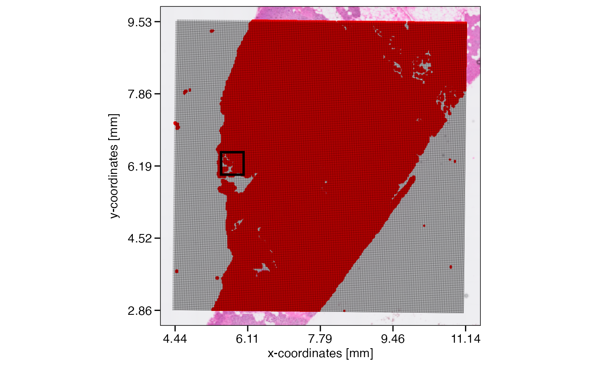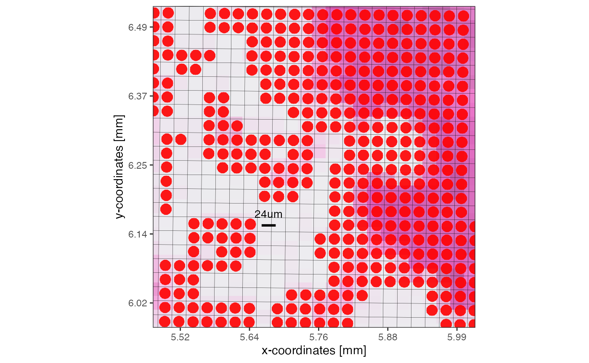
4. Merging back to higher resolution
Once analysis was conducted on a lower resolution, the results can be
transferred back to the high resolution object using the barcodes of the
reduction process as keys. Use the function
unwindAggregation().
# example
reconstr_df <- unwindAggregation(object_32um, var_names = "square_count")
reconstr_df## # A tibble: 176,400 × 3
## barcodes barcodes_aggr square_count
## <chr> <chr> <int>
## 1 s_016um_00000_00000-1 c0r0 NA
## 2 s_016um_00000_00001-1 c0r0 NA
## 3 s_016um_00001_00000-1 c0r0 NA
## 4 s_016um_00001_00001-1 c0r0 NA
## 5 s_016um_00002_00000-1 c0r1 NA
## 6 s_016um_00002_00001-1 c0r1 NA
## 7 s_016um_00003_00000-1 c0r1 NA
## 8 s_016um_00003_00001-1 c0r1 NA
## 9 s_016um_00020_00000-1 c0r10 NA
## 10 s_016um_00020_00001-1 c0r10 NA
## # ℹ 176,390 more rows5. Meta data of the reduction process
Reducing the resolution increases the diameter of the observations, the squared spots. If located at the edge of the tissue, this can lead to these larger squares transgressing the tissue edge, including fewer spots than those in the center of the tissue. How many spots the new spots used for aggregation is stored in the meta variables square_count and square_perc in absolute and relative terms, respectively.
# note how several new squares do not contain 4 but 3 to 1 spots due to the tissue edge
plotSurface(object, xrange = xrange, yrange = yrange, unit = "mm", pt_size = 0.1, pt_clr = "red") +
scale_bar_layer +
grid_layer_zoomed
# note how several new squares do not contain 4 but 3 to 1 spots due to the tissue edge
plotSurface(object_32um, color_by = "square_count", xrange = xrange, yrange = yrange, unit = "mm", pt_size = 0.2) +
grid_layer_zoomed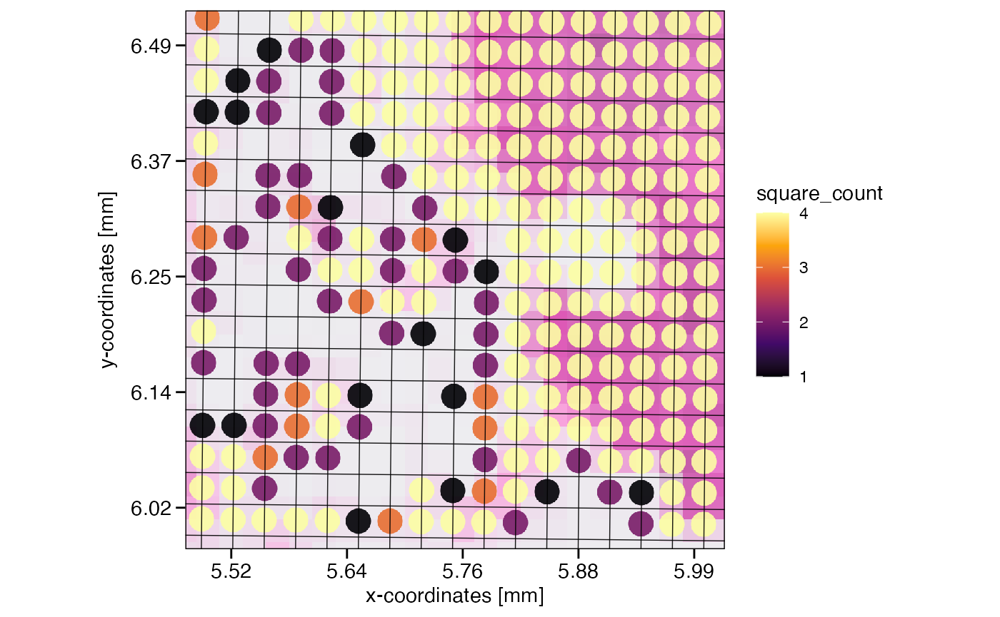
Depending on your overall goal and downstream analysis workflow, you might want to remove these edge crossing squares. If so, one line of code does the trick.
# filter if you want to by referring directly to meta variables
object_32um_flt <- filterSpataObject(object_32um, square_count > 3)
# left plot, not filtered
plotSurface(object_32um, color_by = "square_perc", xrange = xrange, yrange = yrange, unit = "mm", pt_size = 0.2) +
grid_layer_zoomed +
labs(subtitle = "Not filtered")
# rightplot, filtered
plotSurface(object_32um_flt, color_by = "square_perc", xrange = xrange, yrange = yrange, unit = "mm", pt_size = 0.2) +
grid_layer_zoomed +
labs(subtitle = "Filtered")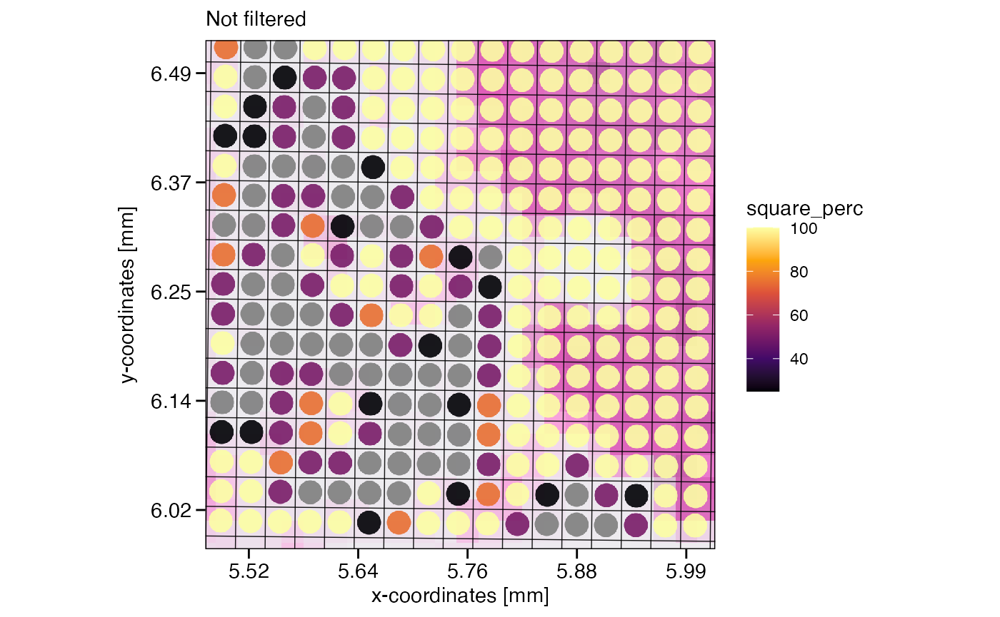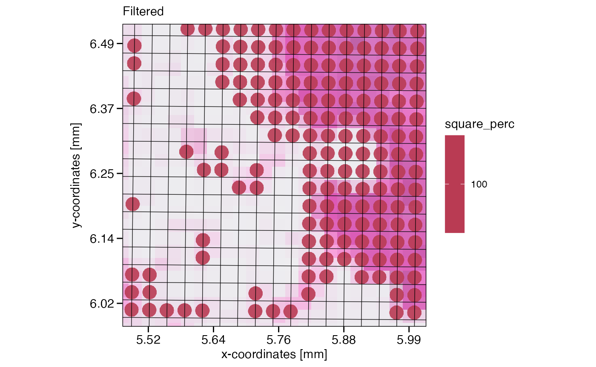
6. Proof of principle
To validate this approach, we compare the counts of a
SPATA2 VisiumHD object that directly derived from the
~/binned_outs_016um folder with an object whose resolution was
artificially reduced to 16um by
reduceResolutionVisiumHD().
# intiate the objects with different resolutions
object_16um <-
initiateSpataObjectVisiumHD(
sample_name = "PancreasHD_16um",
directory_visium = dir,#"my/path/to/VisiumHD_Pancreas", # adjust to your directory
square_res = "16um",
genes = genes_keep # reduce size for the sake of this experiment
)
object_8um <-
initiateSpataObjectVisiumHD(
sample_name = "PancreasHD_8um",
directory_visium = dir,#"my/path/to/VisiumHD_Pancreas",
square_res = "8um",
genes = genes_keep
)
# reduce the 8um object
object_16um_art <- reduceResolutionVisiumHD(object_8um, res_new = "16um")Next, we extract the counts of two examples genes, INS and VIP, and spatial coordinates from the original object and the artificially reduced object. Furthermore, we suffix the variables from the artificially created 16um resolution object with *_art*.
example_genes <- c("VIP", "INS")
counts16um_orig <-
getCoordsDf(object_16um, variables = example_genes) %>%
dplyr::select(barcodes, col, row, x, y, INS, VIP)
# show results
head(counts16um_orig)
## # A tibble: 6 × 7
## barcodes col row x y INS VIP
## <chr> <int> <int> <dbl> <dbl> <dbl> <dbl>
## 1 s_016um_00000_00170-1 248 0 354. 120. 0 0
## 2 s_016um_00000_00171-1 247 0 353. 120. 2 0
## 3 s_016um_00000_00207-1 211 0 329. 120. 1 0
## 4 s_016um_00000_00208-1 210 0 328. 120. 1 0
## 5 s_016um_00000_00209-1 209 0 327. 120. 0 0
## 6 s_016um_00000_00210-1 208 0 327. 120. 1 0
counts16um_art <-
getCoordsDf(object_16um_art, variables = example_genes) %>%
dplyr::select(barcodes, col, row, x_art = x, y_art = y, INS_art = INS, VIP_art = VIP)
# show results
head(counts16um_art)
## # A tibble: 6 × 7
## barcodes col row x_art y_art INS_art VIP_art
## <chr> <int> <int> <dbl> <dbl> <dbl> <dbl>
## 1 c0r269 0 269 187. 304. 0 0
## 2 c0r270 0 270 187. 305. 0 0
## 3 c0r271 0 271 187. 305. 0 0
## 4 c100r0 100 0 253. 121. 130 0
## 5 c100r1 100 1 253. 122. 26 0
## 6 c100r10 100 10 253. 128. 0 0Note, that reduceResolutionVisiumHD() creates new
barcodes! While it would certainly possible to mimic the 10X naming
convention for VisiumHD, easier is to just join the count data using the
spatial variables col and row as keys.
# merge both data.frame by col/row key
df_compare <-
dplyr::left_join(
x = counts16um_orig,
y = counts16um_art,
by = c("col", "row")
)
# top left
ggplot(data = df_compare, mapping = aes(x = INS, y = INS_art)) +
geom_point() +
geom_smooth(method = "lm") +
theme_minimal()
# top right
ggplot(data = df_compare, mapping = aes(x = VIP, y = VIP_art)) +
geom_point() +
geom_smooth(method = "lm") +
theme_minimal()
# bottom left
ggplot(data = df_compare, mapping = aes(x = x, y = x_art)) +
geom_point() +
geom_smooth(method = "lm") +
theme_minimal()
# bottom right
ggplot(data = df_compare, mapping = aes(x = x, y = x_art)) +
geom_point() +
geom_smooth(method = "lm") +
theme_minimal() 
All four plots indicate an almost perfect correlation between the artificially downscaled data and the real data, proving the validity of the algorithm. Spatial coordinates are actually exactly the same. For statistic hardliner the exact correlations:
# INS
cor.test(x = df_compare$INS, y = df_compare$INS_art)##
## Pearson's product-moment correlation
##
## data: df_compare$INS and df_compare$INS_art
## t = 36799, df = 106572, p-value < 2.2e-16
## alternative hypothesis: true correlation is not equal to 0
## 95 percent confidence interval:
## 0.9999602 0.9999611
## sample estimates:
## cor
## 0.9999607
# VIP
cor.test(x = df_compare$VIP, y = df_compare$VIP_art)##
## Pearson's product-moment correlation
##
## data: df_compare$VIP and df_compare$VIP_art
## t = 54844, df = 106572, p-value < 2.2e-16
## alternative hypothesis: true correlation is not equal to 0
## 95 percent confidence interval:
## 0.9999821 0.9999825
## sample estimates:
## cor
## 0.9999823
# x coordinates
cor.test(x = df_compare$x, y = df_compare$x_art)##
## Pearson's product-moment correlation
##
## data: df_compare$x and df_compare$x_art
## t = 1.832e+09, df = 106572, p-value < 2.2e-16
## alternative hypothesis: true correlation is not equal to 0
## 95 percent confidence interval:
## 1 1
## sample estimates:
## cor
## 1
# y coordinates
cor.test(x = df_compare$y, y = df_compare$y_art)##
## Pearson's product-moment correlation
##
## data: df_compare$y and df_compare$y_art
## t = 2070105284, df = 106572, p-value < 2.2e-16
## alternative hypothesis: true correlation is not equal to 0
## 95 percent confidence interval:
## 1 1
## sample estimates:
## cor
## 1